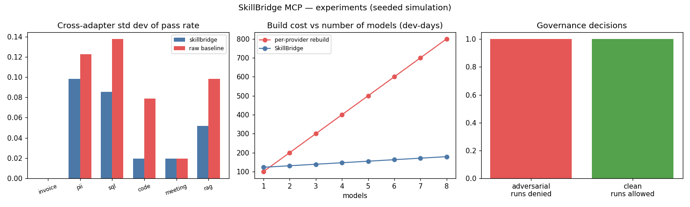

A model-agnostic framework for reusable AI skills
Skills, instructions, tools, and workflows are coupled to specific model providers, prompting conventions, and tool-calling interfaces — producing duplicated engineering effort, vendor lock-in, inconsistent behavior, and rising maintenance costs.
The Model Context Protocol (MCP) standardizes access to tools and context, but not packaging, executing, governing, or evaluating portable skills across heterogeneous environments. There is no 'develop once, deploy anywhere' layer for skills.
SkillBridge defines portable SkillPackages (manifest + provider-neutral instructions + capability-referencing workflows + eval cases), a versioned registry, a policy engine (approved-tools allowlist, high-sensitivity approval gates, deprecation refusal), a capability broker binding to MCP servers, model adapters translating to each provider's calling convention, and a cross-model eval harness.
| Skill | SkillBridge σ | Per-provider σ |
|---|---|---|
| pii-redactor | 0.059 | 0.157 |
| sql-generator | 0.098 | 0.148 |
| code-reviewer | 0.052 | 0.104 |
| meeting-summarizer | 0.020 | 0.052 |
| rag-answerer | 0.071 | 0.142 |
Cross-adapter pass-rate std halved (0.050 vs 0.100) across 132 eval cases × 3 adapters. Reuse economics: the framework pays off from 2+ models (saves 345 dev-days at 5 models). Governance: 3/3 adversarial runs denied, 20/20 clean runs allowed.

experiments/run_experiments.py — re-running reproduces these exactly.src/agentic_systems/skillbridge/
skill.py # SkillPackage: manifest + instructions + workflow + eval
registry.py # versioned registry, caret-range resolution
capabilities.py # CapabilityBroker -> MCP-style servers
adapters.py # openai / anthropic / local tool-convention adapters
policy.py # allowlist, sensitivity gates, deprecation
runtime.py # resolve -> govern -> bind -> execute -> audit
eval.py # cross-model portability harness
catalog.py # 6 skills, 132 eval cases
Full source, tests, and experiment code: 04-skillbridge-mcp/ ·
Run: cd 04-skillbridge-mcp && python3 experiments/run_experiments.py